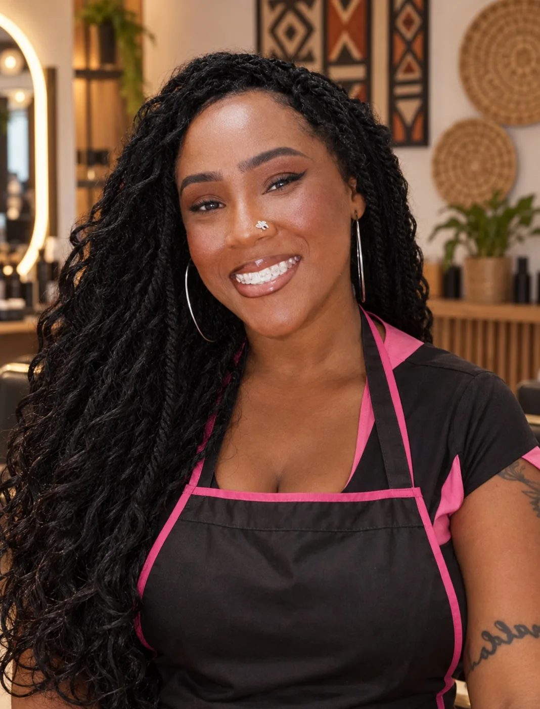
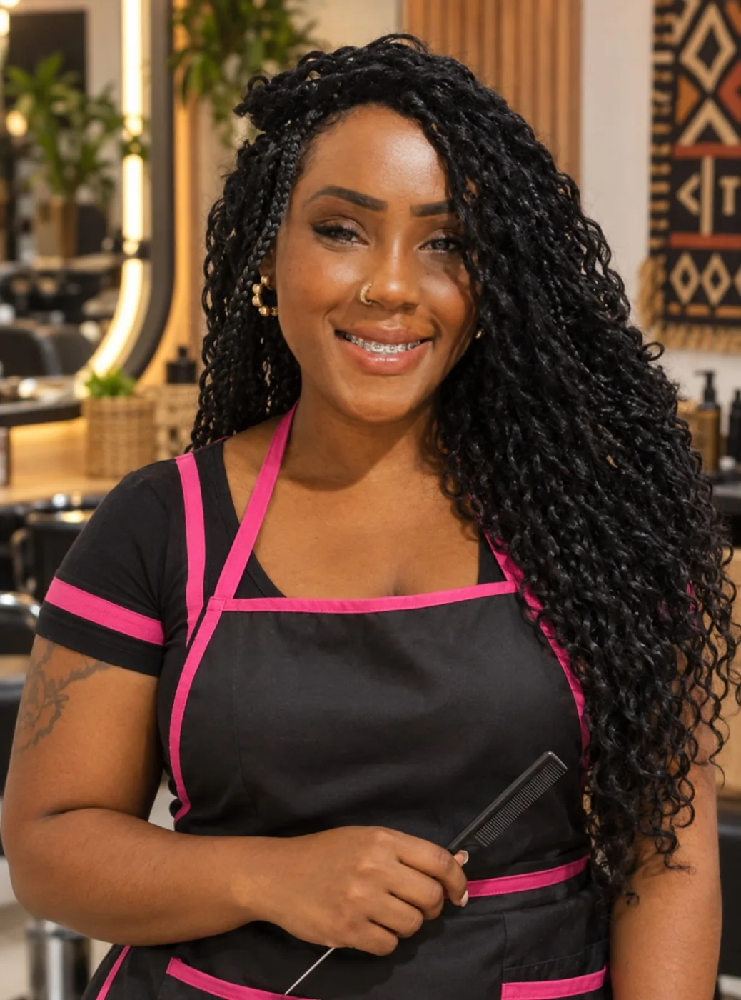

POR EVELLYN GUIMARÃESTRANÇAS / ZONA NORTE · SP

FIG. 01 — A ARTISTADa raiz pra cima.
Tem história em cada divisão.
Tem você em cada trança.
Sou a Evy. Escolha a referência, conte sua ideia e bora encontrar um momento pro seu próximo visual.
Sua assinatura.
RETRATO CRIADO COM IA A PARTIR DAS FOTOS DE EVELLYN.
NÃO É SÓ CABELO.
É PRESENÇA.
Qual desses tem sua cara?
Toque na foto para levar pra sua ficha. Curta para salvar suas favoritas neste navegador.
As fotos são referências de visual. Técnica, aplicação e materiais são definidos com a Evy. As curtidas são favoritas locais, sem publicar no Instagram.

EVELLYNGUIMARÃES.RETRATO CRIADO COM IA A PARTIR DAS FOTOS DE EVELLYN.
MÃO NA RAIZ.
IDEIA NA CABEÇA.
Pode me chamar de Evy.
Evellyn Guimarães é a mulher por trás da Evy Braids. É no encontro entre as mãos dela e a sua ideia que cada desenho ganha forma.
Uma referência no celular, uma vontade de mudar, um detalhe que é só seu. A conversa começa daí.
Sua ficha tá lá em cima ↑DO FEED
PRO SEU PRÓXIMO LOOK.
Três referências publicadas pela Evy. Abra o post e veja mais detalhes.
@EVYGBRAIDS
Mais referências, detalhes de perto e a conversa com a Evy.
SEGUIR NO INSTAGRAM ↗BORA TIRAR
AS DÚVIDAS?
Já fica reservado quando eu escolho?+
Ainda não. Esta agenda é uma demonstração. Escolher dia e horário prepara um pedido; a Evy confirma a disponibilidade na conversa pelo Instagram.
Quanto custa? Quanto tempo leva?+
O valor e a duração dependem da técnica, do comprimento, dos materiais e do acabamento. Envie sua referência e uma foto atual do cabelo para combinar tudo com a Evy.
Minha ideia não tá nas fotos. E agora?+
Escolha “Outra ideia / minha referência” na ficha. Descreva o que você imaginou e leve a foto de referência para a conversa. O campo de mensagem também é todo editável.